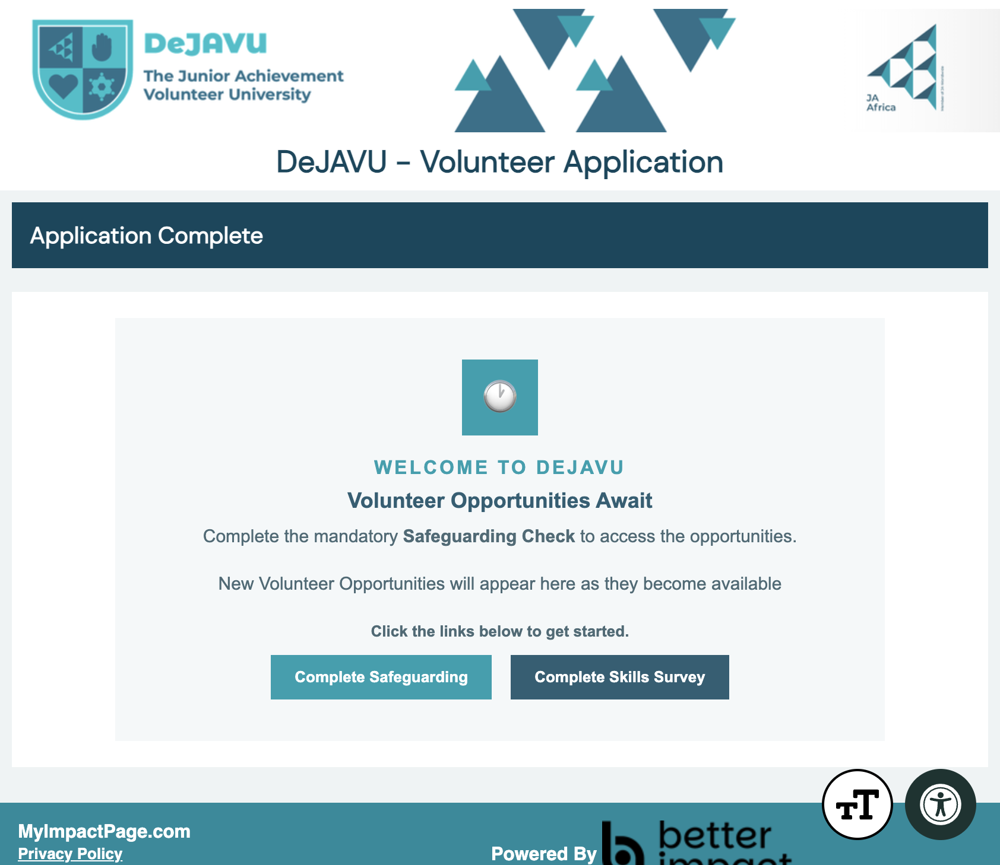
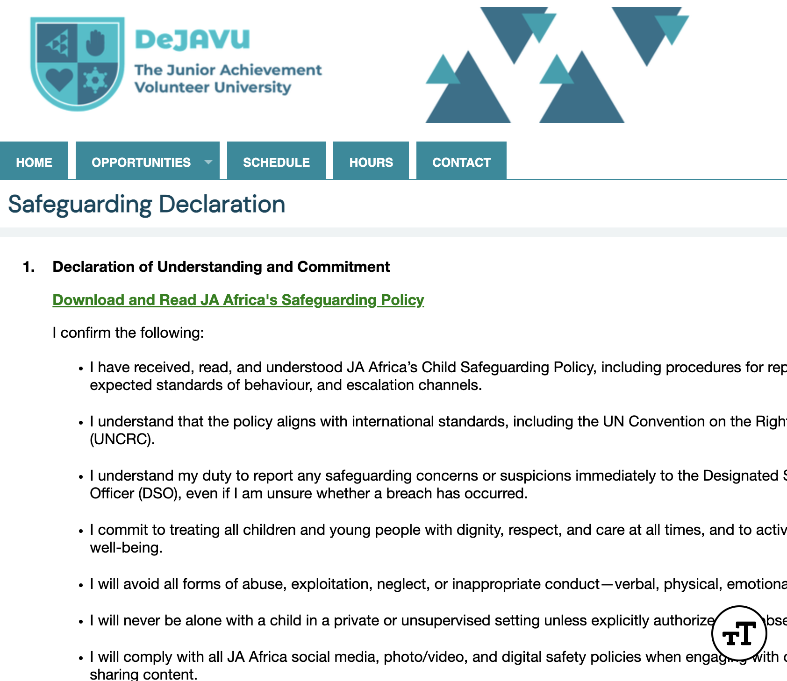
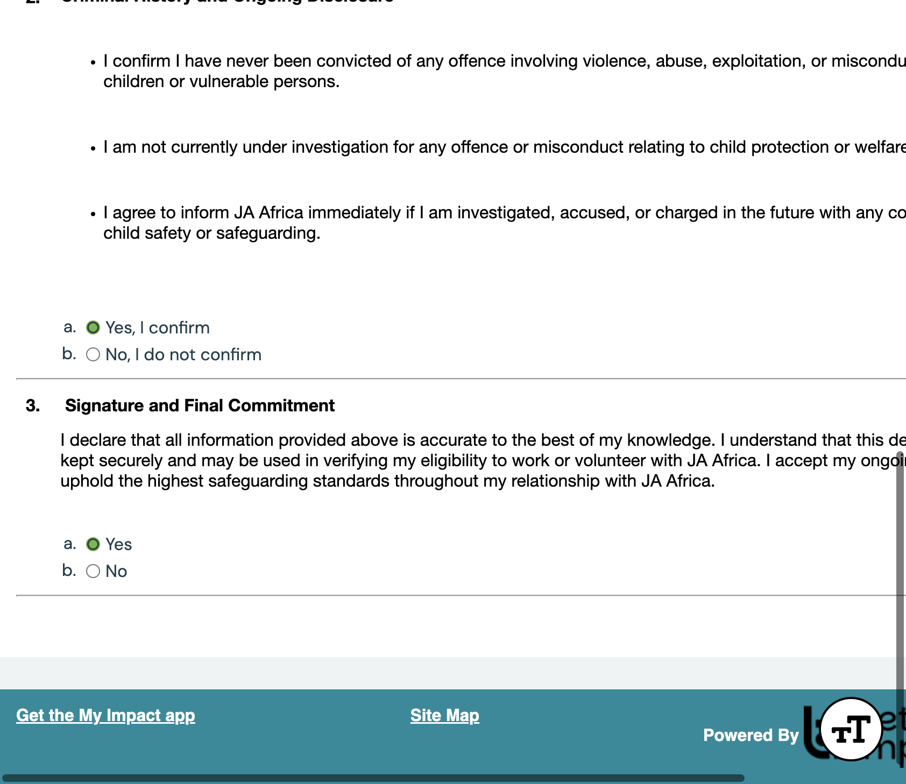
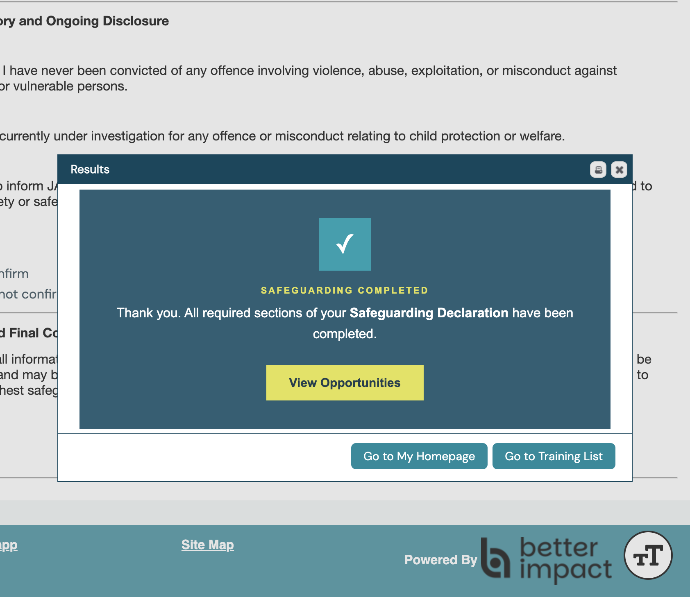

Volunteer guide
Audience · New volunteerComplete Safeguarding
Submit your Safeguarding Declaration so you can access DeJAVU volunteer opportunities. This step is required.
Portal: volunteers.ja-africa.org
Start from Application Complete
After you create your account, you land on the Application Complete page. It tells you to complete the mandatory Safeguarding Check before you can see opportunities.
Click the teal Complete Safeguarding button.

Complete SafeguardingYou can also open Safeguarding later from your welcome email or from links inside your volunteer portal once you are logged in.
Read the Safeguarding Policy
You will open the Safeguarding Declaration page. First, click Download and Read JA Africa's Safeguarding Policy and read the policy carefully.

Download and read the policySection 1 asks you to confirm that you have read and understood the policy, including how to report concerns and how to behave around children and young people.
Answer all three sections
Scroll through the form and answer each section. Choose Yes only if the statements are true for you:
- 1. Declaration of Understanding and Commitment — select Yes, I confirm.
- 2. Criminal History and Ongoing Disclosure — select Yes, I confirm
- 3. Signature and Final Commitment — select Yes

Yes, I confirm YesIf you cannot honestly confirm a statement, choose No and contact your country volunteer coordinator before you continue.
Submit the declaration
When all three sections are answered, click Submit at the bottom of the page.
A results window appears that says Safeguarding Completed. You can then View Opportunities, go to your homepage, or open your training list.

View OpportunitiesOpportunities become available after your Safeguarding Declaration has been submitted and approved, as noted in your welcome email.